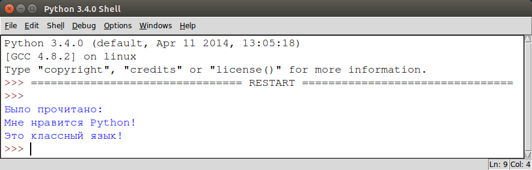

Работа с файлами в Python
Published: 21 May 2015
Hits: 115712
20 Comments
До теперь мы работали только с объектами, сохраненными в оперативной памяти компьютера. То есть после завершения работы программы все наши действия удалялись. Сегодня мы научимся работать с файлами в Python, то есть сохранять состояние программы в файле на жестком диске.
Открытие и закрытие файла в Python.
Перед тем как прочесть и записать что-либо в файл, его следует открыть. Чтобы открыть файл в Pythonиспользуется встроенная функция open(). При вызове, эта функция создает объект типа файл, с которым в дальнейшем можно работать.
Синтаксис функции open() в Python.
my_file = open(имя_файла [, режим_доступа][, буферизация])
При этом:
имя_файла: строка, содержащая имя файла с расширением. Например, "my_file.txt".
режим_доступа: строка, которой мы указываем для чего открывается файл: для чтения, записи, добавления информации, и т.д. Например, "w". По умолчанию файл открывается для чтения - "r".
буферизация: Челое число. Если значение аргумента указано 0 - файл открывается без буферизации, 1 с построчной буферизацией, больше одного процесс буферизации выполняется с указанным размером буфера. Отрицательное число - разер буфера будет равен системному.
Список режимов доступа к файлу в Python.
|
r |
Открывает файл только для чтения. Указатель стоит в начале файла. |
|
rb |
Открывает файл для чтения в двоичном формате. Указатель стоит в начале файла. |
|
r+ |
Открывает файл для чтения и записи. Указатель стоит в начале файла. |
|
rb+ |
Открывает файл для чтения и записи в двоичном формате. Указатель стоит в начале файла. |
|
w |
Открывает файл только для записи. Указатель стоит в начале файла. Создает файл с именем имя_файла, если такового не существует. |
|
wb |
Открывает файл для записи в двоичном формате. Указатель стоит в начале файла. Создает файл с именем имя_файла, если такового не существует. |
|
w+ |
Открывает файл для чтения и записи. Указатель стоит в начале файла. Создает файл с именем имя_файла, если такового не существует. |
|
wb+ |
Открывает файл для чтения и записи в двоичном формате. Указатель стоит в начале файла. Создает файл с именем имя_файла, если такового не существует. |
|
a |
Открывает файл для добавления информации в файл. Указатель стоит в конце файла. Создает файл с именем имя_файла, если такового не существует. |
|
ab |
Открывает файл для добавления в двоичном формате. Указатель стоит в конце файла. Создает файл с именем имя_файла, если такового не существует. |
|
a+ |
Открывает файл для добавления и чтения. Указатель стоит в конце файла. Создает файл с именем имя_файла, если такового не существует. |
|
ab+ |
Открывает файл для добавления и чтения в двоичном формате. Указатель стоит в конце файла. Создает файл с именем имя_файла, если такового не существует. |
Атрибуты файлового объекта в Python.
Как только файл был открыт и у вас появился файловый объект, вы можете получить следующую информацию о нем:
|
file.closed |
Возвращает True если файл был закрыт. |
|
file.mode |
Возвращает режим доступа, с которым был открыт файл. |
|
file.name |
Возвращает имя файла. |
|
file.softspace |
Возвращает False если при выводе содержимого файла следует отдельно добавлять пробел. |
Например:
|
1 2 3 4 5 |
my_file = open("some.txt", "w") print("Имя файла: ", my_file.name) print("Файл закрыт: ", my_file.closed) print("В каком режиме файл открыт: ", my_file.mode) print("Пробелы: ", my_file.softspace) |
Закрытие файла в Python. Метод close().
Метод файлового объекта close() автоматически закрывает файл, при этом теряется любая несохраненная информация. Работать с файлом (читать, записывать) после этого нельзя.
Python автоматически закрывает файл если файловый объект к которому он привязан присваивается другому файлу. Однако, хорошей практикой будет вручную закрывать файл командой close().
|
1 2 3 4 5 |
my_file = open("some.txt") print("Имя файла: ", my_file.name) print("Файл закрыт: ", my_file.closed) my_file.close() print("А теперь закрыт: ", my_file.closed) |
Чтение и запись файлов в Python
Для файлового объекта доступен целый набор методов, чтобы облегчить нашу работу с файлом.
Запись в файл в Python. Метод write().
Метод write() записывает любую строку в открытый файл. Важно помнить, что строки в Python могут содержать двоичные данные, а не только текст.
Метод write() не добавляет символ переноса строки ('\n') в конец файла.
Синтаксис метода write().
|
1 |
my_file.write(string); |
Например:
|
1 2 3 |
my_file = open("some.txt", "w") my_file.write("Мне нравится Python!\nЭто классный язык!") my_file.close() |
Вышеприведенный код создаст файл some.txt и запишет в него указанную строку.
Чтение из файла в Python. Метод read().
Метод read() читает строку из открытого файла.
Синтаксис метода read().
|
1 |
my_file.read([count]) |
Необязательный параметр count - это количество байт, которые следует прочитать из открытого файла. Этот метод читает информацию с начала файла и, если параметр count не указан, до конца файла.
Например, прочтем созданный нами файл some.txt:
|
1 2 3 4 5 |
my_file = open("some.txt") my_string = my_file.read() print("Было прочитано:") print(my_string) my_file.close() |

Как узнать позицию указателя в файле в Python.
После того как вы вызвали метод read() на файловом объекте, если вы повторно вызовете read(), то увидите лишь пустую строку. Это происходит потому, что после первого прочтения указатель находится вконце файла. Для того чтобы узнать позицию указателя можно использовать метод tell().
Например:
|
1 2 3 4 |
my_file = open("some.txt") my_file.read(10) print ("Я на позиции:", my_file.tell()) my_file.close() |
Говоря проще, метод tell() сообщает в скольки байтах от начала файла мы сейчас находимся.
Чтобы перейти на нужную нам позицию, следует использовать другой метод - seek().
Синтаксис метода seek().
|
1 |
my_file.seek(offset, [from]) |
Аргумент offset указывет на сколько байт перейти. опциональный аргумент from означает позицию, с которой начинается движение. 0 - означает начало файла, 1 нынешняя позиция, 2 - конец файла.
The seek(offset[, from]) method changes the current file position. The offset argument indicates the number of bytes to be moved. The from argument specifies the reference position from where the bytes are to be moved.
Например:
|
1 2 3 4 5 6 7 |
my_file = open("some.txt", "r") print(my_file.read(10)) print("Мы находимся на позиции: ", my_file.tell()) # Возвращаемся в начало my_file.seek(0) print(my_file.read(10)) my_file.close() |
Добавление в файл. Метод write()
Если вы хотите не перезаписать файл полностью (что делает метод write в случае открытия файла в режиме 'w'), а только добаить какой-либо текст, то файл следует открывать в режиме 'a' - appending. После чего использовать все тот же метод write.
Например:
|
1 2 3 4 5 6 7 8 |
# Удалит существующую информацию в some.txt и запишет "Hello". my_file = open("some.txt", 'w') my_file.write("Hello") my_file.close() # Оставит существующую информацию в some.txt и добавит "Hello". my_file = open("some.txt", 'a') my_file.write("Hello") my_file.close() |
Расширенная работа с файлами в Python.
Для доступа к более широкому функционалу в работе с файлами в Python, как то удаление файлов, создание директорий и т.д. Следует подключить библиотеку os. Скоро выйдут статьи с примерами.